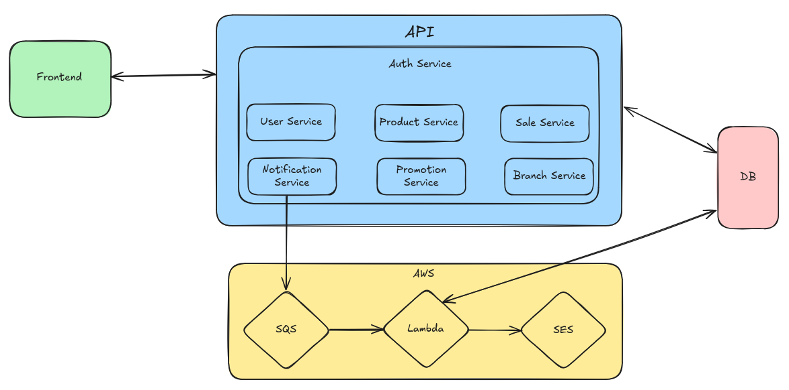

Design de Sistema

Este documento descreve a arquitetura de alto nível da aplicação PharmaWeave.
Camadas da Arquitetura
1. Frontend
- Interface web utilizada por administradores, gerentes e funcionários.
- Comunica-se diretamente com a API para realizar operações como gestão de produtos, vendas, promoções e administração de unidades.
2. API
- Camada central que concentra a lógica de negócio do sistema.
- Conectada ao banco de dados para persistência das informações.
- Expõe endpoints REST para o frontend.
Principais Serviços:
- Auth Service: autenticação e controle de acesso.
- User Service: gerenciamento de usuários (administradores, gerentes, funcionários e clientes).
- Product Service: criação, atualização e controle de estoque de produtos.
- Sale Service: registro e controle de vendas.
- Promotion Service: criação e gerenciamento de promoções.
- Branch Service: registro e gerenciamento de unidades (filiais).
- Notification Service: integração com a AWS para envio de notificações automáticas.
3. Integração com AWS
- Responsável pelo processamento assíncrono de notificações.
- Garante escalabilidade e confiabilidade no envio de mensagens automáticas.
Fluxo de Trabalho:
- O Notification Service envia mensagens para a fila SQS.
- A função Lambda consome a fila e processa cada notificação.
- O SES envia os e-mails de notificação para os clientes.